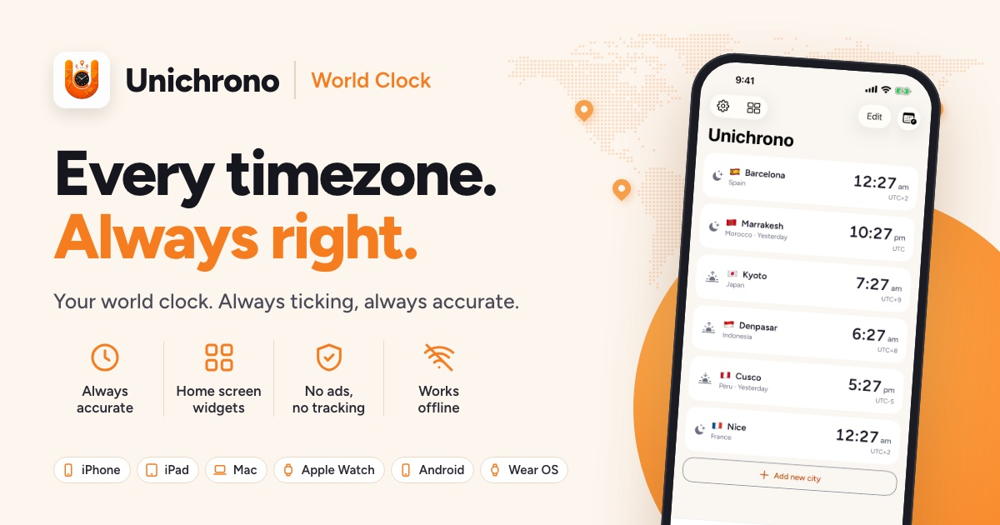
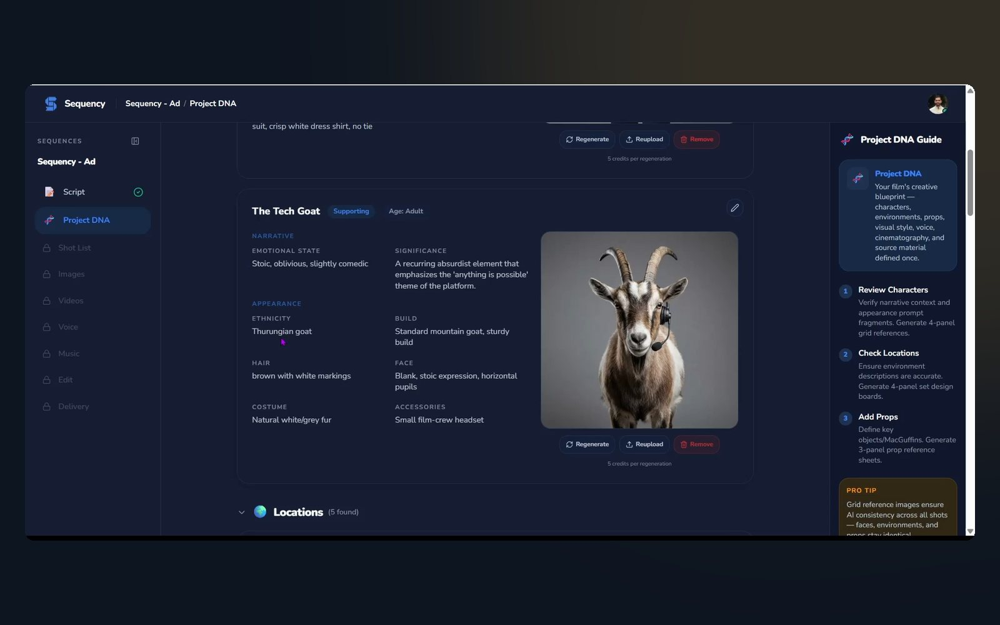
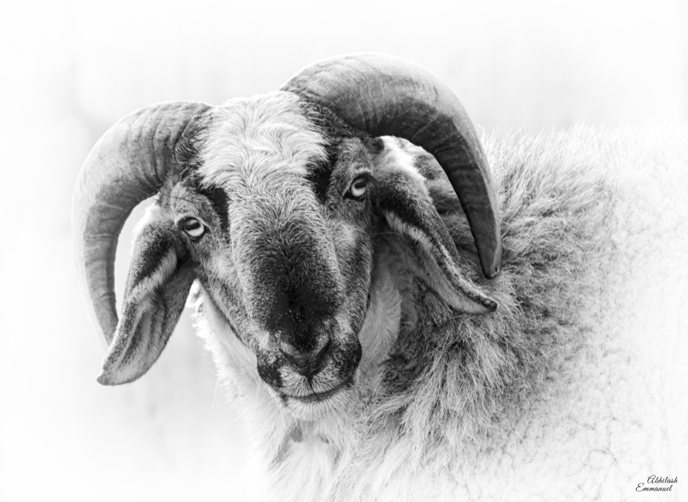
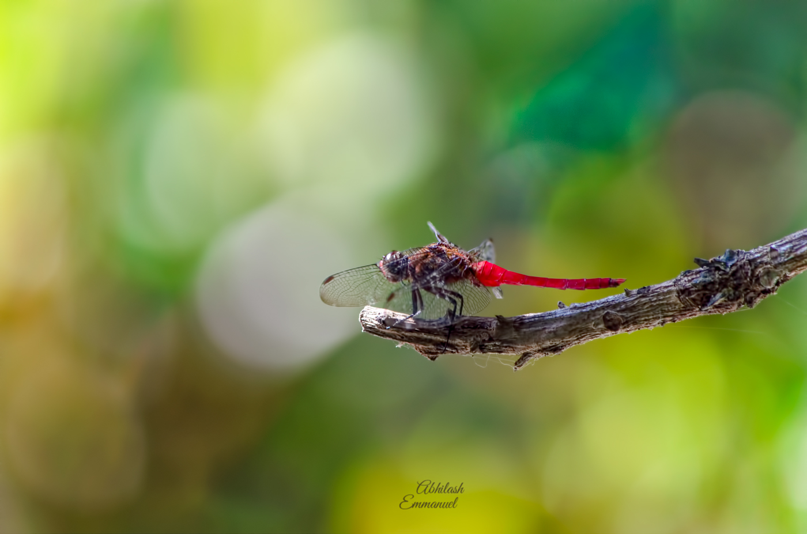

Every problem I've been handed started the same way: static. Half-formed requirements, messy data, a hunch. The work is finding the signal, then building something that holds it.
Learning to read a messy world.
Instrumentation is the craft of pulling a clean reading out of a noisy sensor. Filters, calibration, feedback loops. I didn't know it then, but that was the whole career in miniature.

Ten years inside enterprise delivery.
A decade of moving up through analyst, engineering and lead roles, including on-site delivery for US clients in Chicago. I learned how large systems really get built: slowly, by many people, with the requirements changing underneath you.

Keeping world-class live events on air.
I partnered with enterprise customers to design and run Akamai delivery and media solutions for major global live events, including the IPL and FIFA. More than 30 million concurrent viewers, with zero downtime. In the evenings I finished an M.Sc. in Cyber Forensics & Information Security at the University of Madras.
Building practical AI, end to end.
Now I help teams decide where AI is worth it, then build it: LLM and RAG systems, agents, automation. I ship my own products too, because advice lands better when you've felt the edge cases yourself.

Unichrono
A widget-first world clock for people whose day spans time zones. Designed, built and published solo.
unichrono.app ↗
Sequency
An AI video production platform. I architected and built it from prototype to a working multi-agent SaaS product.
sequency.cc ↗Warranty Management System
Receipts in, warranties tracked, reminders out. An n8n pipeline that turns a shoebox of paperwork into a schedule.
GitHub ↗Personal Assistant
An agent that handles the small daily admin so attention stays on the real work.
GitHub ↗Off the clock.
Same instinct, different instrument. I photograph whatever stops me walking, and make short films with generative AI for fun.



The instruments.
What I reach for, grouped by the job it does.
- LLMs & agents
- RAG & MCP
- Claude Code · Cursor
- n8n
- Diffusion models
- Python
- TypeScript · React
- Next.js · Node.js
- Supabase
- PostgreSQL
- Git
- PMP® · Agile
- Jira · Confluence
- AI-assisted design
- Lovable
- Adobe Suite · UI/UX
- Kotlin
- Jetpack Compose
- Glance widgets
- Room
- Android · iOS
Bring me your noise.
Pick an example to see how I'd turn a messy problem into a plan, or describe your own. Hit Denoise it and your email opens with the note ready to send me.
- Goal
- What's actually wrong
- What you already have
- First two weeks
- Closest thing I've done
- To
- bewithaby@gmail.com
- Subject
- Message
bewithaby@gmail.com